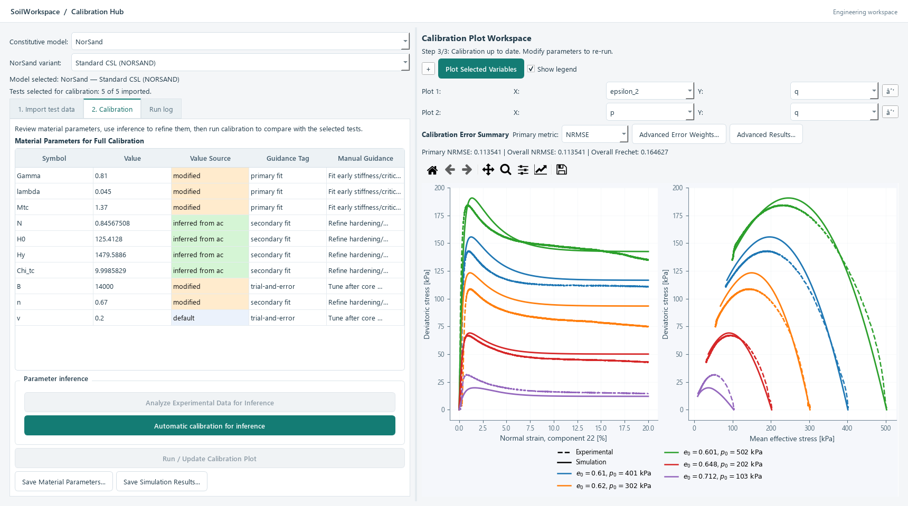
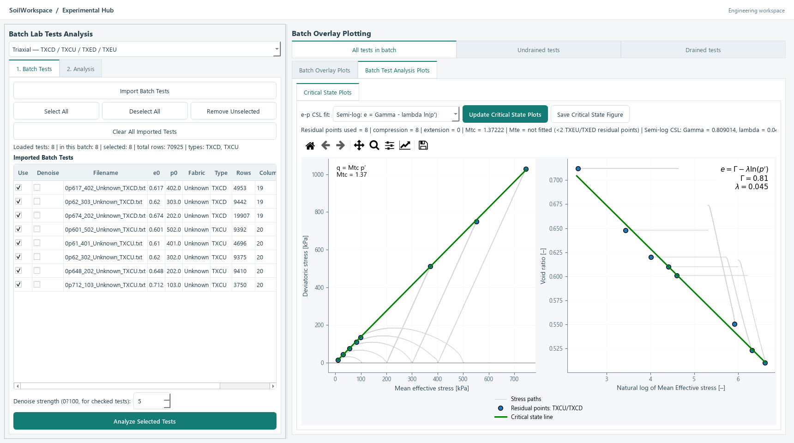
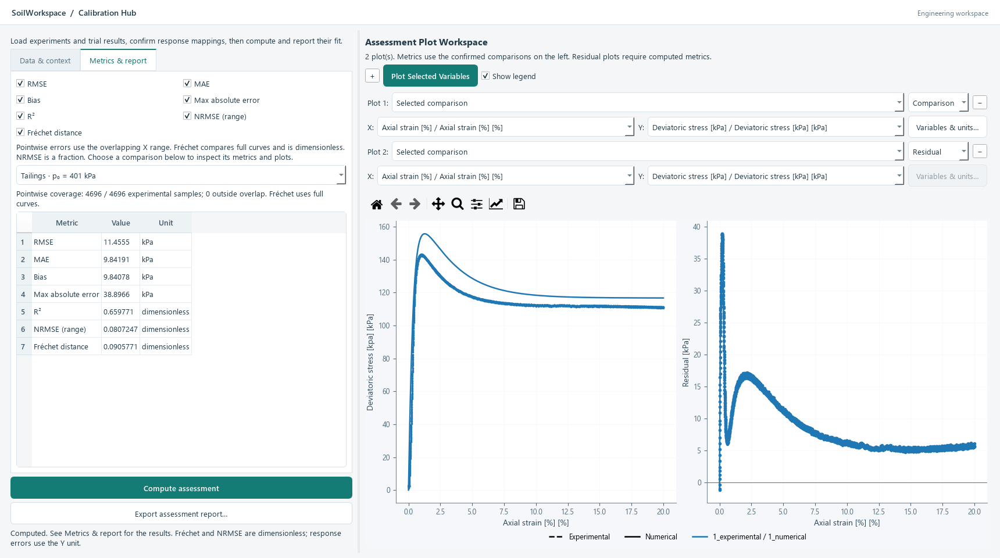
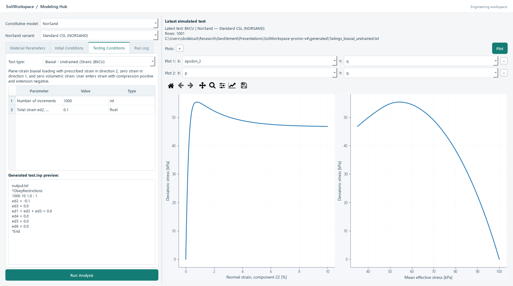

01 / ANALYZE
Understand the soil
Prepare test data, classify materials, and interpret individual and batch experiments.
Experimental HubYour integrated workspace for experimental soil characterization, constitutive model calibration, and numerical soil testing.
A preview of the software and the vision shaping its development.

The connected workflow
Move from individual experiments to material-level relationships, calibrated parameters, and predicted soil behavior.
Prepare test data, classify materials, and interpret individual and batch experiments.
Experimental HubConnect measured responses to model parameters, then examine the quality of the fit.
Calibration HubInvestigate constitutive behavior through numerical soil tests and varied stress paths.
Modeling HubPrepare platform-specific user-defined models for analysis in external simulation software.
The wider visionSee the workflow in action
A 90-second tour of the research software, from classification and critical state to calibration, numerical testing, and model handoff.
Research demonstration. Native simulation, optimization, and PLAXIS wrapper compilation run in the research environment; these are disabled in the installed pilot. Public release scope is still being finalized.
Read the transcript ↓SoilWorkspace provides an integrated workflow—preparing reliable material models from experimental data for field-scale simulation. It has three main hubs: the Experimental Hub, the Calibration Hub, and the Modeling Hub—each with dedicated workspaces.
The Experimental Hub brings soil characterization into one place. Material Classification combines particle-size distributions and index properties to determine soil classification. Single Test Analysis interprets individual experiments. For example, it identifies compression and swelling indices from the oedometer test shown here. Batch Test Analysis reveals material-level relationships, including critical state and undrained instability.
The Calibration Hub connects experimental insights with advanced constitutive models. Automatic calibration fits selected parameters to measured responses within defined bounds. Fit Assessment quantifies the agreement and highlights the remaining differences.
The Modeling Hub explores predicted behavior across a variety of stress paths through triaxial, biaxial, simple-shear, and hollow-cylinder tests. The undrained biaxial response shown here illustrates this numerical testing capability.
Its platform-specific user-defined model generator bridges material modelling and field-scale analysis. PLAXIS is the example shown here. SoilWorkspace prepares the model; external platforms run the field-scale analysis.
SoilWorkspace: one place to turn raw data into a robust material model for engineering analysis. Currently under active development. Keep an eye out for the release!
Inside SoilWorkspace
Explore real views from the software. Each hub answers a different question about the same material.
Bring soil characterization into one place, from raw test files to material-level interpretation.

Connect experimental insights with constitutive models and examine the differences that remain.

Explore constitutive behavior under different loading conditions before connecting a material model to field-scale analysis.

Select a hub to explore its workspace. Select a screenshot to view it at full size.
The current vision
SoilWorkspace is being developed to bring experimental evidence, constitutive model calibration, and numerical soil testing into one coherent material workflow.
Carry material understanding from test interpretation into calibration and response comparison.
Review agreement, residuals, and fitted parameters together to support engineering judgment.
Prepare material models for external platforms, where field-scale simulations take place.
The material-model handoff
SoilWorkspace prepares the material model. The external platform runs the field-scale analysis.
Demonstrated in research: PLAXIS model-wrapper generation.
Planned targets: FLAC, ABAQUS, and Anura3D.
The next chapter
We’re bringing this vision together into SoilWorkspace. Explore the preview today, and keep an eye out for the public release.
About the developer
Developer of SoilWorkspace. Explore the project repository for an overview of the software and its connected workflow for soil characterization and material modelling.